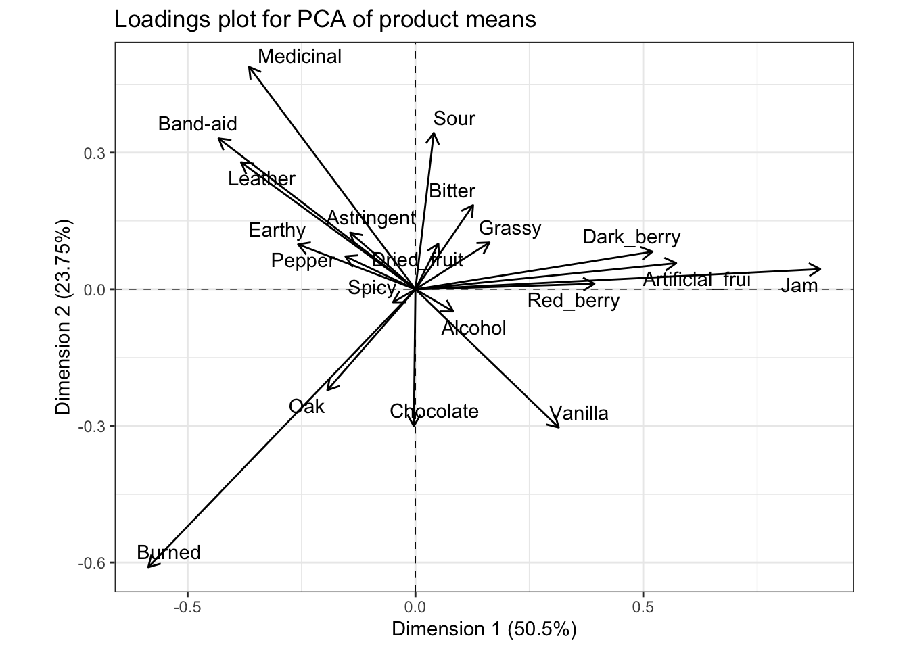
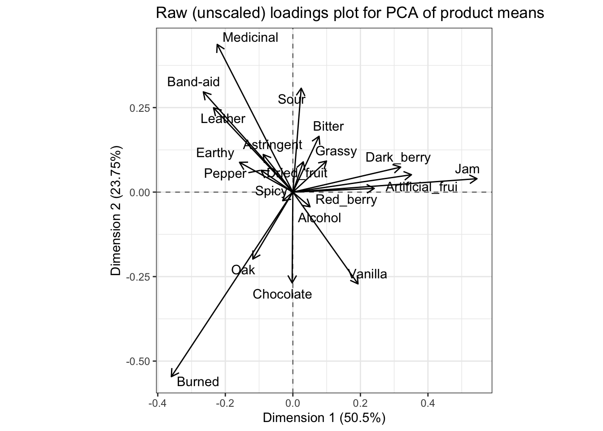
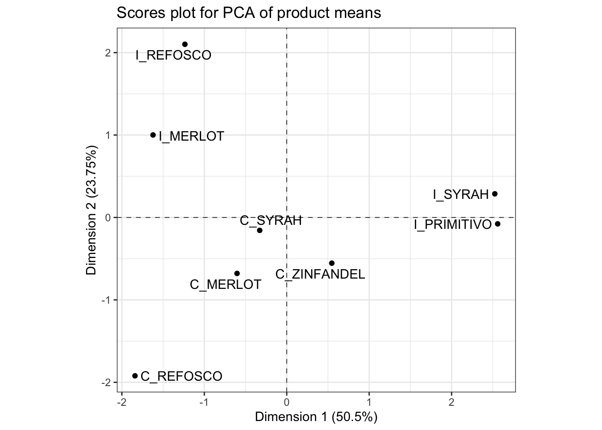
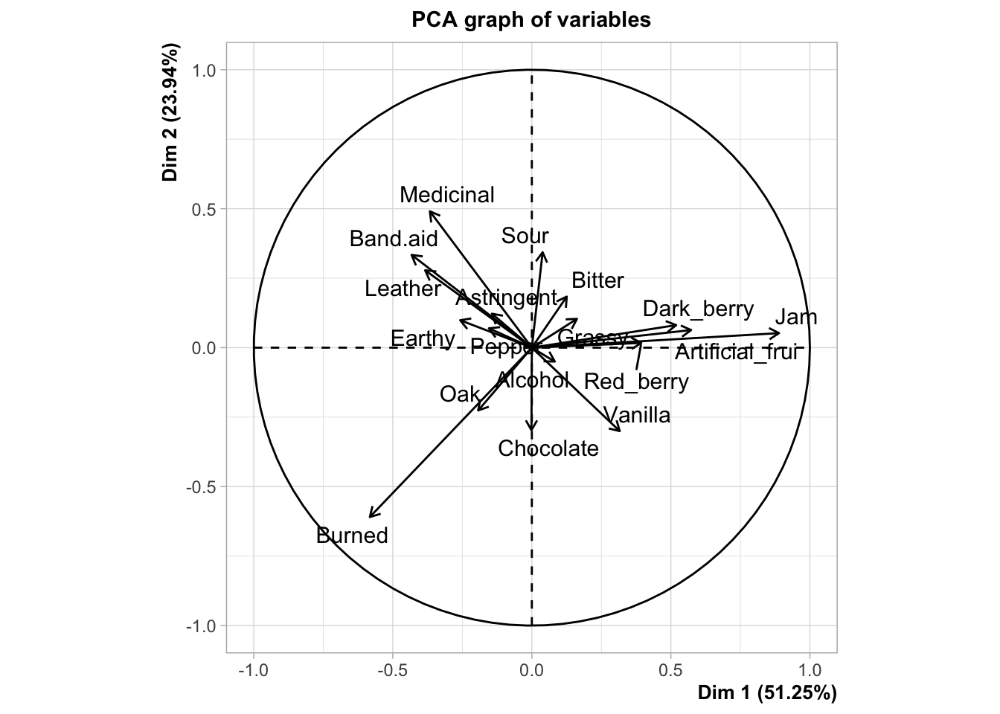
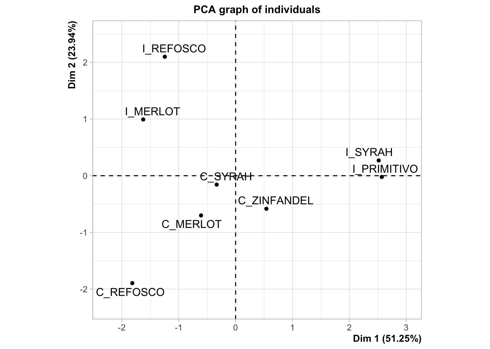
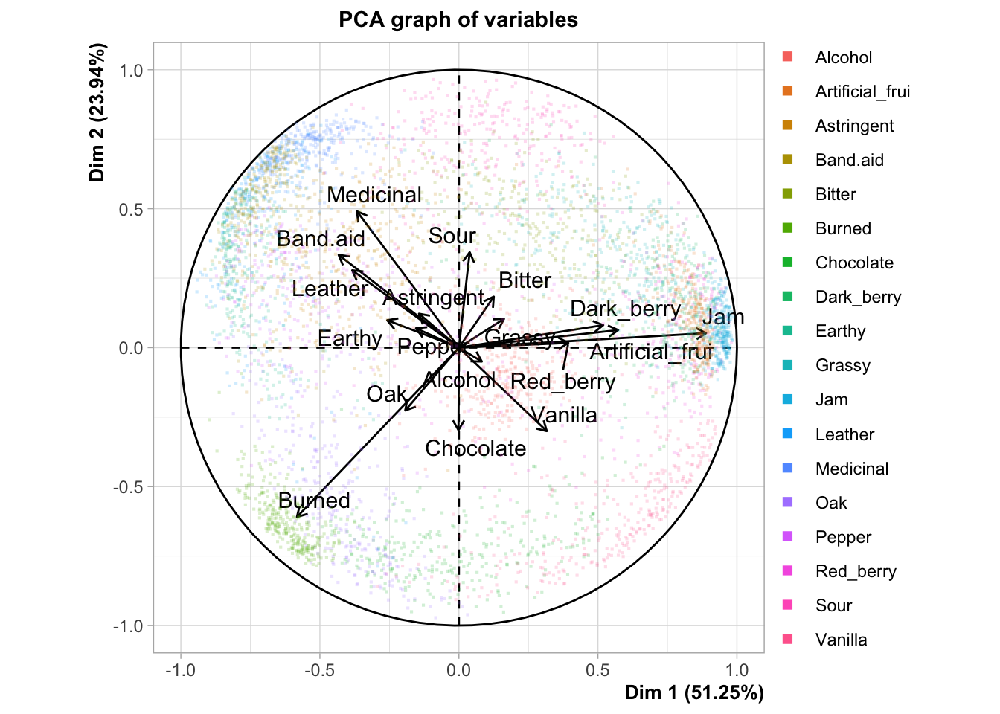
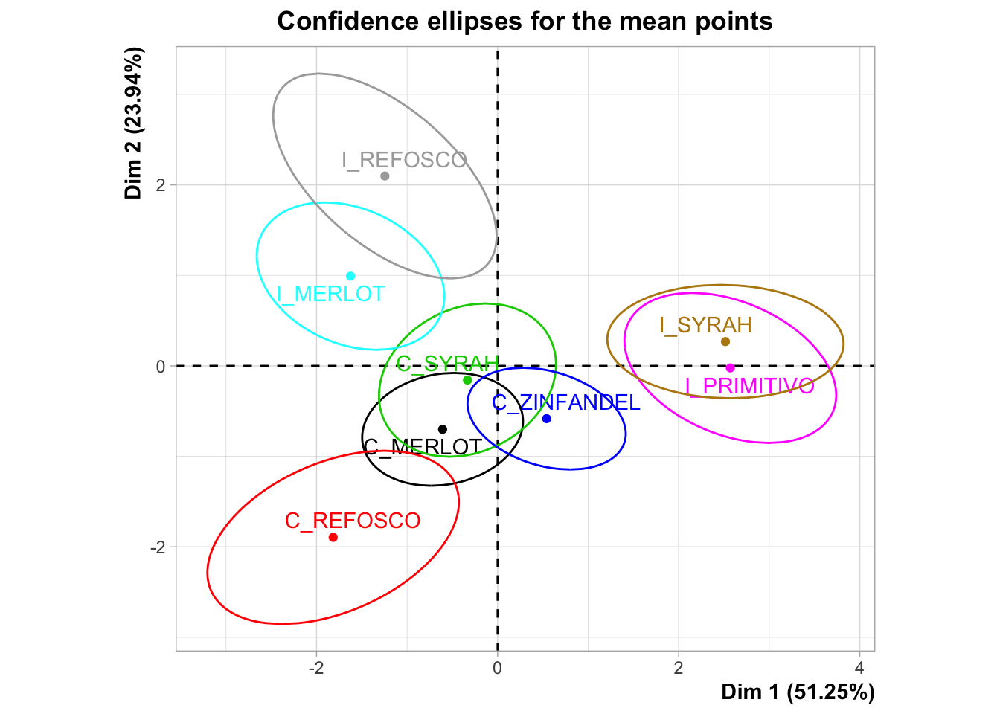
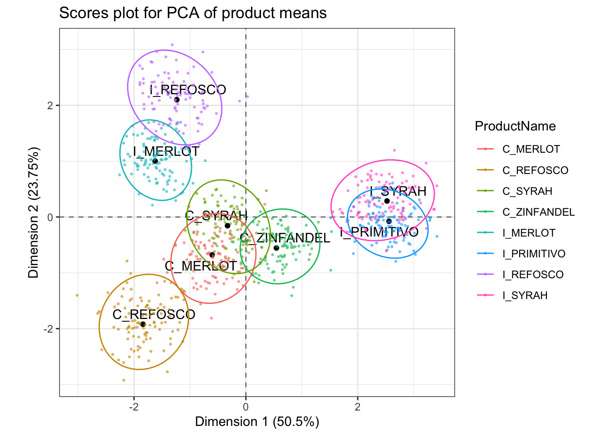

Chapter 6 Principal Components Analysis (PCA)
While HGH is a strong proponent of Canonical Variate Analysis (CVA), it is hard to argue that Principal Components Analysis is not the “workhorse” tool for analysis of multivariate sensory datasets. In fact, PCA is probably the most common tool for multivariate analysis, hard stop. This is because it is so closely related to eigendecomposition and Singular Value Decomposition (SVD).
We’ll start with setting up our data as usual. This time, we’ll use the FactoMineR package for PCA because of its comprehensive outputs. You could also use the base R function princomp(), but it provides fewer sensory-specific options.
library(tidyverse)
library(FactoMineR) # this is new
library(here)
descriptive_data <- read_csv(here("data/torriDAFinal.csv")) %>%
mutate_at(.vars = vars(1:3), ~as.factor(.))6.1 What does PCA do?
As a reminder, in a dataset with multiple variables measured on the same observations, PCA finds linear combinations of the original variables that maximally explain the covariance among the original variables. Thus, the criterion maximized by PCA is explanation of (co)variance. We often describe this as “amount of variation explained” by the subsequent, new linear combinations. In highly correlated data, which is usually the case in sensory data, PCA is very effective at finding a few new linear combinations of the original variables that explain most of the observed variance.
Typically, PCA is conducted on mean vectors.
Speaking of CVA, recall that CVA finds linear combinations of variables that best explain mean-vector separation in the original data. Thus, while CVA operates on raw data, it is looking to separate the mean-vectors or “barycenters” of the data. PCA “knows” less information about the data: in fact, PCA is an “unsupervised” learning approach, in comparison to the “supervision” provided by the group IDs in CVA. PCA is also generally lax about assumptions: the main assumption is that the observed variables are continuous. If they are categorical, it is probably more appropriate to use (multiple) Correspondence Analysis.
PCA is equivalent to the eigendecomposition of the covariance matrix of our original variables. If we standardize our variables (convert them to z-scores, or equivalently center our variables and standardize them to have unit variance) we will be conducting eigendecomposition on a correlation matrix. Thus, you will often see discussion of “correlation” vs “covariance” PCA. There are times in which one or the other is most appropriate for sensory results, but here we’ll focus on correlation PCA.
A final note on PCA is that, because of the nature of eigendecomposition, the components are mutually orthogonal: they are uncorrelated and, geometrically, form right angles in the multivariate space.
For more details on PCA, I strongly recommend Hervé Abdi’s excellent and detailed chapter on the topic, available on his website (I think A77 is the entry in his pub list).
6.2 Let’s do PCA!
HGH starts the original R Opus with a function to take column and group means of the data in descriptive_data that she calls mtable(), for “means table”. Luckily for us, this functionality is a basic part of the tidyverse, and we’ve already used this approach in previous sections. So let’s generate a means table using tidyverse:
descriptive_means <-
descriptive_data %>%
# What defines the group for which we want means?
group_by(ProductName) %>%
# Then we take the group means for every numeric variable (ignore NR, NJ)
summarize_if(is.numeric, ~mean(.))
descriptive_means## # A tibble: 8 × 21
## ProductName Red_berry Dark_berry Jam Dried_fruit Artificial_frui Chocolate
## <fct> <dbl> <dbl> <dbl> <dbl> <dbl> <dbl>
## 1 C_MERLOT 2.46 3.05 1.37 1.86 0.776 1.19
## 2 C_REFOSCO 2.47 2.46 1.03 1.42 0.924 2.00
## 3 C_SYRAH 2.46 2.93 1.75 1.68 0.883 1.42
## 4 C_ZINFANDEL 3.08 3.06 1.98 2.06 0.864 0.969
## 5 I_MERLOT 2.79 2.35 0.843 1.85 0.574 0.783
## 6 I_PRIMITIVO 3.85 3.38 3.61 1.44 2.19 1.38
## 7 I_REFOSCO 2.48 3.01 1.54 1.87 1.11 0.810
## 8 I_SYRAH 3.17 4.48 3.10 2.16 2.43 1.20
## # ℹ 14 more variables: Vanilla <dbl>, Oak <dbl>, Burned <dbl>, Leather <dbl>,
## # Earthy <dbl>, Spicy <dbl>, Pepper <dbl>, Grassy <dbl>, Medicinal <dbl>,
## # `Band-aid` <dbl>, Sour <dbl>, Bitter <dbl>, Alcohol <dbl>, Astringent <dbl>The FactoMineR::PCA() function is great, but it also tries to do way too much. One of its annoying habits is a desire to give you a lot of plots you don’t want. So be sure to use the graph = FALSE argument so you have more control over plotting. It also uses an older standard which relies on storing observation IDs in row.names–this isn’t great programming practice and we have to explicitly do so. Following HGH, we are going to conduct a covariance PCA by setting scale.unit = FALSE.
means_pca <-
descriptive_means %>%
column_to_rownames("ProductName") %>%
PCA(scale.unit = FALSE, graph = FALSE)
means_pca## **Results for the Principal Component Analysis (PCA)**
## The analysis was performed on 8 individuals, described by 20 variables
## *The results are available in the following objects:
##
## name description
## 1 "$eig" "eigenvalues"
## 2 "$var" "results for the variables"
## 3 "$var$coord" "coord. for the variables"
## 4 "$var$cor" "correlations variables - dimensions"
## 5 "$var$cos2" "cos2 for the variables"
## 6 "$var$contrib" "contributions of the variables"
## 7 "$ind" "results for the individuals"
## 8 "$ind$coord" "coord. for the individuals"
## 9 "$ind$cos2" "cos2 for the individuals"
## 10 "$ind$contrib" "contributions of the individuals"
## 11 "$call" "summary statistics"
## 12 "$call$centre" "mean of the variables"
## 13 "$call$ecart.type" "standard error of the variables"
## 14 "$call$row.w" "weights for the individuals"
## 15 "$call$col.w" "weights for the variables"The nice thing about PCA() is that it gives a well-structured list of results that we can do a lot with. First off, let’s make a quick “scree plot”, describing the variance explained by each of the principal components.
## eigenvalue percentage of variance cumulative percentage of variance
## comp 1 2.65480006 50.496451 50.49645
## comp 2 1.24849044 23.747301 74.24375
## comp 3 0.53223903 10.123618 84.36737
## comp 4 0.32433613 6.169136 90.53651
## comp 5 0.31577131 6.006227 96.54273
## comp 6 0.12584413 2.393657 98.93639
## comp 7 0.05591818 1.063609 100.00000# And now we can plot
means_pca$eig %>%
# Note that we need to use `rownames=` to capture the rownames from PCA()
as_tibble(rownames = "component") %>%
ggplot(aes(x = component, y = `percentage of variance`, group = 1)) +
geom_line() +
theme_bw()We can see that the “elbow” here occurs at the third or fourth component, but we’re going to only examine the first 2 components. Keep in mind that this means some variation might not be apparent.
The so-called “loadings” in a PCA are the weights of the linear combination of original variables that make up each component. We access them in the $var$coord table in the results from PCA().
## Dim.1 Dim.2 Dim.3 Dim.4
## Red_berry 0.392823276 0.01215638 -0.121346852 0.0825451624
## Dark_berry 0.520232898 0.08267522 0.199523469 -0.1864158541
## Jam 0.888495244 0.04433424 0.073820850 0.1720938632
## Dried_fruit 0.050212647 0.10009820 -0.019690630 -0.1664223919
## Artificial_frui 0.572309456 0.05751255 0.238851293 -0.0038853644
## Chocolate -0.003475125 -0.30028443 0.170378617 0.0938653125
## Vanilla 0.314478467 -0.30349435 0.018229231 0.1585583125
## Oak -0.193340853 -0.22147313 -0.071362551 -0.0086868023
## Burned -0.586302217 -0.61025517 0.337991587 -0.0004488918
## Leather -0.382862924 0.27891331 0.103734732 0.0930246719
## Earthy -0.257608328 0.09856678 0.079461250 0.0145072272
## Spicy -0.049183026 -0.02852180 0.031255722 -0.0507807926
## Pepper -0.153720418 0.07222224 -0.133757042 -0.2058682953
## Grassy 0.162497315 0.10272633 -0.002515019 -0.1016081718
## Medicinal -0.365073070 0.48842639 0.031051449 0.2422723514
## Band-aid -0.432054073 0.33143313 0.129721753 0.0777846772
## Sour 0.040307189 0.34354213 0.186317776 0.0065371842
## Bitter 0.126467903 0.18466794 0.285051403 -0.1458235340
## Alcohol 0.082923788 -0.04864986 0.221354178 0.1389696519
## Astringent -0.143108623 0.12443684 0.217756015 -0.1479925430
## Dim.5
## Red_berry 0.157522934
## Dark_berry -0.097453593
## Jam 0.079902737
## Dried_fruit -0.135993046
## Artificial_frui 0.168622742
## Chocolate 0.078682732
## Vanilla -0.039447653
## Oak -0.178016939
## Burned 0.135757837
## Leather -0.022575394
## Earthy 0.040315580
## Spicy 0.050007545
## Pepper 0.124049258
## Grassy 0.109061848
## Medicinal -0.003582952
## Band-aid 0.175578114
## Sour -0.064779269
## Bitter -0.029549547
## Alcohol -0.320004547
## Astringent 0.007052281Technically, the number of dimensions we could get from a PCA is equal to the \(min(n-1, k)\), where \(n\) is the number of product means we have and \(k\) is the number of measured variables, but in practice we won’t typically examine more than 3-4 components/dimensions, as having to examine more for our purposes would indicate that PCA may not be the right tool for dimension reduction.
p_loadings <-
means_pca$var$coord %>%
as_tibble(rownames = "descriptor") %>%
ggplot(aes(x = Dim.1, y = Dim.2)) +
geom_hline(yintercept = 0, linetype = "dashed", size = 1/4) +
geom_vline(xintercept = 0, linetype = "dashed", size = 1/4) +
geom_segment(aes(xend = 0, yend = 0),
arrow = arrow(length = unit(0.1, "in"), ends = "first")) +
ggrepel::geom_text_repel(aes(label = descriptor)) +
theme_bw() +
coord_fixed() +
labs(title = "Loadings plot for PCA of product means",
x = paste0("Dimension 1 (", round(means_pca$eig[1, 2], 2), "%)"),
y = paste0("Dimension 2 (", round(means_pca$eig[2, 2], 2), "%)")) ## Warning: Using `size` aesthetic for lines was deprecated in ggplot2 3.4.0.
## ℹ Please use `linewidth` instead.
## This warning is displayed once every 8 hours.
## Call `lifecycle::last_lifecycle_warnings()` to see where this warning was
## generated.
Typically, we’d interpret this by looking at variables that are very “close” (make acute angles to) the x- or y-axes (which are the first and second components, respectively), and that are very long. The magnitude of the vector indicates the coefficient for that variable in the linear combination making up each of the two principal components that serve as axes of the displayed space. Therefore, we’d say that the fruity flavors (e.g., Jam) are loading strongly and positively on the first component, and almost not at all to the second component, and that the strongest negative contributions come from Burned, which is also strongly negatively loaded on the second component. For the second component, Medicinal and Band-aid, with other associated flavors, are strongly positively loaded (and negatively loaded on the first dimension), whereas Sour loads positively almost entirely on the first component, but not as strongly. There are many other observations we could make from this plot. It is worth comparing it to the loading/coefficient plot for the CVA; you will see that while the values of the coefficients are not identical, the patterns are very similar.
As a side note (because I had to puzzle this out myself), the $var$coord matrix is not the raw \(\mathbf{Q}\) loadings matrix from singular value decomposition (SVD), which we’d use to find the scores for the original observations. Rather, if we write the SVD as \(\mathbf{X} = \mathbf{P \Delta Q}^T\), it is \(\mathbf{\Delta Q}^T\). In effect, the “coordinates” given in $var$coord are expanded by the size of the singular value for the associated principal component. We can find the raw loadings (coefficient), \(\mathbf Q\) in the $svd$V matrix in the results from the PCA() function.
We find scores for our product means by using the linear combinations described by the loadings. So, we could by hand calculate:
## [,1] [,2] [,3] [,4] [,5]
## [1,] 0.241091170 0.01087957 -0.166331750 0.1449419026 0.280322177
## [2,] 0.319287490 0.07399166 0.273489481 -0.3273295222 -0.173424927
## [3,] 0.545304646 0.03967772 0.101187224 0.3021813905 0.142192051
## [4,] 0.030817486 0.08958466 -0.026990210 -0.2922227956 -0.242008358
## [5,] 0.351248932 0.05147188 0.327396655 -0.0068223514 0.300074997
## [6,] -0.002132821 -0.26874488 0.233540243 0.1648190709 0.140020974
## [7,] 0.193007864 -0.27161766 0.024987051 0.2784141773 -0.070199632
## [8,] -0.118660923 -0.19821131 -0.097817601 -0.0152532458 -0.316792574
## [9,] -0.359836842 -0.54615870 0.463289578 -0.0007882138 0.241589787
## [10,] -0.234978108 0.24961842 0.142190582 0.1633429815 -0.040174364
## [11,] -0.158104412 0.08821409 0.108918596 0.0254733899 0.071744163
## [12,] -0.030185567 -0.02552609 0.042842635 -0.0891665178 0.088991638
## [13,] -0.094344296 0.06463658 -0.183342562 -0.3614862644 0.220753620
## [14,] 0.099731024 0.09193675 -0.003447371 -0.1784148375 0.194082562
## [15,] -0.224059772 0.43712587 0.042562636 0.4254085222 -0.006376094
## [16,] -0.265168660 0.29662196 0.177811338 0.1365829175 0.312452529
## [17,] 0.024738115 0.30745913 0.255388262 0.0114787092 -0.115278869
## [18,] 0.077618350 0.16527185 0.390723762 -0.2560530483 -0.052585316
## [19,] 0.050893606 -0.04354006 0.303413126 0.2440182460 -0.569468640
## [20,] -0.087831418 0.11136696 0.298481076 -0.2598616336 0.012549988This tells us that, to get a mean vector \(i\)’s score on principal component 1 (Dimension 1), we would calculate \(PC_i = 0.24 * Red\_berry_i + ... -0.09 * Astringent_i\), and so on (note that because this is a raw matrix, it has no row names or descriptive columns; I am getting the loadings for specific descriptors by looking back at what the 1st and 20th descriptors are in our data set and matching them up manually).
Before we leave this topic, I want to point out one more thing: if we plot the raw loadings, we’ll come to the same conclusions:
means_pca$svd$V %>%
as_tibble() %>%
bind_cols(descriptor = row.names(means_pca$var$coord)) %>%
rename(Dim.1 = V1, Dim.2 = V2) %>%
ggplot(aes(x = Dim.1, y = Dim.2)) +
geom_hline(yintercept = 0, linetype = "dashed", size = 1/4) +
geom_vline(xintercept = 0, linetype = "dashed", size = 1/4) +
geom_segment(aes(xend = 0, yend = 0),
arrow = arrow(length = unit(0.1, "in"), ends = "first")) +
ggrepel::geom_text_repel(aes(label = descriptor)) +
theme_bw() +
coord_fixed() +
labs(title = "Raw (unscaled) loadings plot for PCA of product means",
x = paste0("Dimension 1 (", round(means_pca$eig[1, 2], 2), "%)"),
y = paste0("Dimension 2 (", round(means_pca$eig[2, 2], 2), "%)")) ## Warning: The `x` argument of `as_tibble.matrix()` must have unique column names if
## `.name_repair` is omitted as of tibble 2.0.0.
## ℹ Using compatibility `.name_repair`.
## This warning is displayed once every 8 hours.
## Call `lifecycle::last_lifecycle_warnings()` to see where this warning was
## generated.
OK, with all that said, if we multiply our means-vector ratings (mean-centered for each column) by the loadings we just spent a while getting, we get the scores for our mean vectors in the PCA space. These are stored in the $ind$coord matrix.
p_scores <-
means_pca$ind$coord %>%
as_tibble(rownames = "product") %>%
ggplot(aes(x = Dim.1, y = Dim.2)) +
geom_hline(yintercept = 0, linetype = "dashed", size = 1/4) +
geom_vline(xintercept = 0, linetype = "dashed", size = 1/4) +
geom_point() +
ggrepel::geom_text_repel(aes(label = product)) +
theme_bw() +
coord_fixed() +
labs(title = "Scores plot for PCA of product means",
x = paste0("Dimension 1 (", round(means_pca$eig[1, 2], 2), "%)"),
y = paste0("Dimension 2 (", round(means_pca$eig[2, 2], 2), "%)"))
p_scores
We interpret this plot by noting the spatial separation of sample mean-vectors, as well as noting the proximity to the axes, which we interpret by their loadings from variables. In order to facilitate this second task, it is often helpful to have the loadings and scores plots side by side. We can accomplish this using the nifty patchwork package, which lets us arrange saved plots however we want.

By looking at these plots together, we can see that the first dimension, which we previously noted separated fruity flavors from medicinal and burnt flavors, is driven by a separation of the Italian Primitivo and Syrah samples from the other samples. The second dimension, which is separating the medicinal and burnt flavors, is interestingly also separating the Californian and Italian wines made from two sets of the same grape, Refosco and Merlot.
6.3 In-depth interpretation
There are several ways that we can get more information about the structure of the PCA solution. First, we will follow HGH and investigate the correlations between the variables and each of the first two components. HGH used the FactoMineR::dimdesc() function, but I find this prints out too much to look good here. We can access the correlations directly using $var$cor in the output of the PCA() function. I’ll turn it into a tibble to make display easier.
# The most highly correlated variables with Dimension 1
means_pca$var$cor %>%
as_tibble(rownames = "descriptor") %>%
select(1:3) %>%
arrange(-Dim.1) %>%
slice(1:3, 18:20)## # A tibble: 6 × 3
## descriptor Dim.1 Dim.2
## <chr> <dbl> <dbl>
## 1 Jam 0.972 0.0485
## 2 Artificial_frui 0.882 0.0886
## 3 Dark_berry 0.849 0.135
## 4 Band-aid -0.726 0.557
## 5 Leather -0.750 0.547
## 6 Earthy -0.864 0.330# The most highly correlated variables with Dimension 2
means_pca$var$cor %>%
as_tibble(rownames = "descriptor") %>%
select(1:3) %>%
arrange(-Dim.2) %>%
slice(1:3, 18:20)## # A tibble: 6 × 3
## descriptor Dim.1 Dim.2
## <chr> <dbl> <dbl>
## 1 Sour 0.0997 0.850
## 2 Medicinal -0.554 0.741
## 3 Band-aid -0.726 0.557
## 4 Vanilla 0.660 -0.637
## 5 Burned -0.636 -0.662
## 6 Chocolate -0.00940 -0.812These are also called loadings (Herve Abdi and Williams 2010). The semantics of PCA are a nightmare. We can see that these reflect our interpretation from the loadings plot pretty accurately.
HGH then calculated the “communalities” for variables on the first and second dimensions of the PCA solution. I had to do some digging to figure out what she meant by this, but she described them as:
Communality is the sum of the squared loadings for the number of dimensions that you would like to keep.
We know from Herve Abdi and Williams (2010) that the sum of squared loadings (in the sense of correlations) for each dimension should sum to 1, so this allows us to speak of “proportion of explained variance” for each variable and each dimension. But we have to remember the semantic overloadings here, so if we want to see this property we will need to look at the $svd$V matrix again. The $var$cor matrix, remember, stores this scaled by the original variables (maybe this is instead storing covariances). We can see this pretty easily:
# The "cor" matrix doesn't seem to really be storing what we think of as
# correlations.
means_pca$var$cor %>%
as_tibble(rownames = "descriptor") %>%
pivot_longer(-descriptor) %>%
mutate(squared_loading = value ^ 2) %>%
group_by(name) %>%
summarize(total = sum(squared_loading))## # A tibble: 5 × 2
## name total
## <chr> <dbl>
## 1 Dim.1 7.46
## 2 Dim.2 4.58
## 3 Dim.3 2.45
## 4 Dim.4 2.06
## 5 Dim.5 1.88# Whereas the SVD list behaves as expected.
means_pca$svd$V %>%
as_tibble() %>%
pivot_longer(everything()) %>%
mutate(value = value ^ 2) %>%
group_by(name) %>%
summarize(total = sum(value))## # A tibble: 5 × 2
## name total
## <chr> <dbl>
## 1 V1 1.00
## 2 V2 1
## 3 V3 1.00
## 4 V4 1.00
## 5 V5 16.3.1 Correlations or (squared) loadings or contributions
The correlations between the variables and the components are also unfortunately called “loadings” (cf. Herve Abdi and Williams 2010 for more info), but these are distinct (although related, argh) from the “loadings” we discussed as the elements of the \(\mathbf Q\) matrix from SVD.
We could directly calculate these, but we can make use of the dimdesc() convenience function
## $Dim.1
##
## Link between the variable and the continuous variables (R-square)
## =================================================================================
## correlation p.value
## Jam 0.9723336 5.184944e-05
## Artificial_frui 0.8819989 3.752736e-03
## Dark_berry 0.8492159 7.630518e-03
## Red_berry 0.8418534 8.752510e-03
## Band-aid -0.7259831 4.144504e-02
## Leather -0.7504104 3.195742e-02
## Earthy -0.8635921 5.713937e-03
##
## $Dim.2
##
## Link between the variable and the continuous variables (R-square)
## =================================================================================
## correlation p.value
## Sour 0.8501775 0.007491159
## Medicinal 0.7412352 0.035345156
## Chocolate -0.8121299 0.014329245HGH calls these squared correlations the “communalities” of the variables, which should(?) sum to 1. This is not the case here because we have a typical \(n<p\) problem: there are more variables than observations (when we run a PCA on the means of the products across panelists and reps).
There are a number of other ways to interpret the over-loaded “loadings”–the role of the variables in determining the new principal-components space in PCA results. To return to the progression of the R Opus, let’s follow HGH in examining the Contributions and the Communalities in the PCA results.
According to Herve Abdi and Williams (2010, 8–9),
…the importance of an observation for a component can be obtained by the ratio of the squared factor score of this observation by the eigenvalue associated with that component.
and
The value of a contribution is between 0 and 1 and, for a given component, the sum of the contributions of all observations is equal to 1. The larger the value of the contribution, the more the observation contributes to the component. A useful heuristic is to base the interpretation of a component on the observations whose contribution is larger than the average contribution (i.e., observations whose contribution is larger than \(1/I\)).
While Abdi and Williams are talking about the contribution of an observation, since PCA is (largely) agnostic about the role of observation (product) and variable (descriptor), FactoMineR::PCA() will return contributions for both products and descriptors, found as usual in the ind and var sub-lists of the results. We don’t care so much about the products’ contributions, in this case, but we do care about the variables’. We can find and print them:
## Dim.1 Dim.2 Dim.3 Dim.4 Dim.5
## Red_berry 5.812 0.012 2.767 2.101 7.858
## Dark_berry 10.194 0.547 7.480 10.714 3.008
## Jam 29.736 0.157 1.024 9.131 2.022
## Dried_fruit 0.095 0.803 0.073 8.539 5.857
## Artificial_frui 12.338 0.265 10.719 0.005 9.005
## Chocolate 0.000 7.222 5.454 2.717 1.961
## Vanilla 3.725 7.378 0.062 7.751 0.493
## Oak 1.408 3.929 0.957 0.023 10.036
## Burned 12.948 29.829 21.464 0.000 5.837
## Leather 5.521 6.231 2.022 2.668 0.161
## Earthy 2.500 0.778 1.186 0.065 0.515
## Spicy 0.091 0.065 0.184 0.795 0.792
## Pepper 0.890 0.418 3.361 13.067 4.873
## Grassy 0.995 0.845 0.001 3.183 3.767
## Medicinal 5.020 19.108 0.181 18.097 0.004
## Band-aid 7.031 8.798 3.162 1.865 9.763
## Sour 0.061 9.453 6.522 0.013 1.329
## Bitter 0.602 2.731 15.267 6.556 0.277
## Alcohol 0.259 0.190 9.206 5.954 32.429
## Astringent 0.771 1.240 8.909 6.753 0.016Note that FactoMineR seems to scale the contributions to a percentage (e.g., multiply by 100), rather than returning contributions in the range \([0,1]\). Following Abdi & Williams’ suggestion above, we can do a little wrangling to see important contributions visually:
# First we make a tibble
means_pca$var$contrib %>%
as_tibble(rownames = "descriptor") %>%
# Then we select the first 2 dimensions (for ease)
select(descriptor, Dim.1, Dim.2) %>%
# For both plotting and filtering, long-type data will be easier to work with
pivot_longer(-descriptor) %>%
# We can now choose only contributions > 100 / # of descriptors (that is, 20)
filter(value > 100 / 20) %>%
# We use some convenience functions from `tidytext` to make our facets nicer
mutate(descriptor = factor(descriptor) %>%
tidytext::reorder_within(by = value, within = name)) %>%
# And now we plot!
ggplot(aes(x = descriptor, y = value)) +
geom_col(aes(fill = name), show.legend = FALSE) +
tidytext::scale_x_reordered(NULL) +
coord_flip() +
theme_bw() +
facet_wrap(~name, scales = "free")We can see that for PC1, contributions seem to be coming from a lot of fruity flavors, as well as some influence from complex flavors that I would attribute to possible Brettanomyces influence in some of the wines. In PC2, there appears to be instead more influence of oak (“Chocolate” and “Vanilla”) as well as the same Brettanomyces flavors. Note that contributions, as squared measurements, are always positive - these are absolute measures of influence on the dimensions.
HGH says in the original R Opus that
Communality is the sum of the squared loadings for the number of dimensions that you would like to keep.
I am not sure I quite follow what she did, as she then goes on to examine the contributions, which as we’ve described are the squared loadings divided by the eigenvalues so that they sum to 1. In Herve Abdi and Williams (2010) they don’t discuss communality, and if I remember properly the concept is more frequently applied to Factor Analysis Rencher (2002), so we’ll leave it for now. I think that this is a great example of how closely overlapping concepts can get confusing in the world of components-based methods, since to my understanding Factor Analysis, in some of its simpler forms, can be derived directly from PCA but with different assumptions mapped onto the steps.
6.4 PCA with resampling for confidence intervals
In the original R Opus, HGH uses the SensoMineR::panellipse() function to generate confidence ellipses for the product mean vectors in PCA.
panellipse_res <-
# We have to reimport the data because panellipse() doesn't behave well with
# tibble() formats.
SensoMineR::panellipse(donnee = read.csv(here("data/torriDAFinal.csv")),
col.p = 2, col.j = 1, firstvar = 4, scale.unit = FALSE)
I’m not a huge fan of panellipse() because it’s pretty opaque. I can’t find the documentation on what it’s doing, and there doesn’t seem to be an associated journal article. It doesn’t really document how it is resampling or give easily understood descriptions of what the results (both numerical and graphical) it is producing mean. Here is the plot that HGH uses for the original R Opus:
The confidence ellipses are definitely being drawn around 95% of the resampled results from the bootstrapping procedure, but I’m not sure if this is a bootstrap based on, for example, the “partial bootstrap” or the “truncated bootstrap”. We will us a naive approach to producing a partial bootstrap in order to do some resampling and compare it.
It is also worth noting that the plot produced here is different than that produced in the original R Opus, so eithere there is simulation variability (probably) or the underlying program has changed between 2015 and now (also possible). The overall conclusions are not greatly different but the overlapping areas can vary quite dramatically.
The basic approach (which we saw back in the CVA section of the R Opus) is to draw a new set of bootstrapped observations for each product: we need 42 observations per product to calculate a new mean. We then can use the projection function from our original PCA solution to project these results into our space; in a nod to the truncated bootstrap approach (Cadoret and Husson 2013) we will use only the first 2 dimensions of the projection function to get the results so as not to overfit. Finally, we’ll draw ellipses around our results to represent variability.
get_bootstrapped_pca_means <- function(){
descriptive_data %>%
select(-NJ, -NR) %>%
group_by(ProductName) %>%
# Here we resample each wine - we draw 42 new observations for each wine
# with replacement
slice_sample(prop = 1, replace = TRUE) %>%
# We calculate the mean for the newly drawn samples
summarize_if(is.numeric, ~mean(.)) %>%
# And then we center the means (by subtracting the column means)
mutate_if(is.numeric, ~. - mean(.)) %>%
nest(data = -ProductName) %>%
mutate(means = map(data, ~as.matrix(.x)),
pc1 = map_dbl(means, ~ .x %*% means_pca$svd$V[, 1]),
pc2 = map_dbl(means, ~ .x %*% means_pca$svd$V[, 2])) %>%
select(-data, -means)
}
# Make it reproducible
set.seed(6)
pca_boots <-
tibble(boot_id = 1:100) %>%
mutate(bootstrapped_data = map(boot_id, ~get_bootstrapped_pca_means())) %>%
unnest(bootstrapped_data)
p_scores +
geom_point(data = pca_boots,
inherit.aes = FALSE,
aes(x = pc1, y = pc2, color = ProductName), shape = ".") +
stat_ellipse(data = pca_boots, inherit.aes = FALSE,
aes(x = pc1, y = pc2, color = ProductName))
Our results are pretty close, but not exactly the same. It seems like our method of generating bootstrapped scores (via resampling followed by projection via the \(\mathbf Q\) matrix from SVD) is potentially more liberal in product separation than that from the panellipse() function. Perhaps panellipse() is using the “truncated bootstrap” approach (Cadoret and Husson 2013), which solves a full PCA with the resampled data, then aligns it with the original observed space via Generalized Procrustes Analysis, then repeats that process a large number (e.g., 1000) times..
6.5 Comparison of products with PCA
HGH then used the panellipse() results to get Hotelling’s \(T^2\) stats for each set of products. I believe that Hotelling’s \(T^2\) is a generalization of the \(t\)-distribution to multivariate data. These were accessed from the outputs of panellipse(), which we stored in panellipse_res.
## [1] "eig" "coordinates" "hotelling" "graph" "correl"The SensoMineR::coltable() function HGH used is a visualization function for this kind of output, let’s take a look.

Let’s practice how to make a similar table from this kind of data. The actual panellipse_res$hotelling object is just a square matrix. We can use this as input for something like the geom_tile() function with the right kind of wrangling.
# First wrangle
panellipse_res$hotelling %>%
as_tibble(rownames = "x") %>%
pivot_longer(-x, names_to = "y") %>%
mutate(color = if_else(value < 0.05, "pink", "white")) %>%
# Now plot
ggplot(aes(x = x, y = y)) +
geom_tile(aes(fill = color),
color = "black") +
geom_text(aes(label = round(value, 2))) +
scale_fill_manual(values = c("pink", "white")) +
coord_fixed() +
# Everything after this is just making the plot look nice
scale_x_discrete(position = "top") +
scale_y_discrete(limits = rev) +
labs(x = NULL,
y = NULL,
title = bquote("Pairwise Hotelling's"~italic(T)^2),
subtitle = bquote(italic(p)*"-values"<0.05~"are highlighted in pink")) +
theme_minimal() +
theme(axis.text.x = element_text(angle = 270, hjust = 1),
legend.position = "none",
axis.ticks = element_blank(),
panel.grid = element_blank())
Notice the ggplot2 syntax above is kind of complicated, but that’s because I did it all at once, and I wanted to do a lot of minor things like remove axis ticks, so as to replicate the plot from the panellipse() function closely. Notice that I don’t think the degrees of freedom for the Hotelling’s \(T^2\) plot.
As a bonus, we will quickly look into how to conduct Hotelling’s \(T^2\) tests ourselves, and then leave the world of PCA (for now) to turn to methods for cluster analysis.
# We need pairs of products - if we wanted to make all pairwise comparisons it
# would be possible to do so using, for example, nested `for()` loops or some
# kind of list-table structure
hotelling_demo_data <-
descriptive_data %>%
filter(ProductName %in% c("C_MERLOT", "C_REFOSCO")) %>%
select(-NJ, -NR)
DescTools::HotellingsT2Test(formula = as.matrix(hotelling_demo_data[, -1]) ~ ProductName,
data = hotelling_demo_data)##
## Hotelling's two sample T2-test
##
## data: as.matrix(hotelling_demo_data[, -1]) by ProductName
## T.2 = 2.4053, df1 = 20, df2 = 63, p-value = 0.004345
## alternative hypothesis: true location difference is not equal to c(0,0,0,0,0,0,0,0,0,0,0,0,0,0,0,0,0,0,0,0)These results are not the same as those given in the panellipse() output; I suspect after reading ?panellipse that this is because internally that function is running a Hotelling’s \(T^2\) test on the PCA results, rather than on the raw data, but I am not sure and I am not willing to try to interpret the under-the-hood code. If you know, please reach out and let me know!
6.6 Packages used in this chapter
## R version 4.3.1 (2023-06-16)
## Platform: aarch64-apple-darwin20 (64-bit)
## Running under: macOS Ventura 13.6.1
##
## Matrix products: default
## BLAS: /Library/Frameworks/R.framework/Versions/4.3-arm64/Resources/lib/libRblas.0.dylib
## LAPACK: /Library/Frameworks/R.framework/Versions/4.3-arm64/Resources/lib/libRlapack.dylib; LAPACK version 3.11.0
##
## locale:
## [1] en_US.UTF-8/en_US.UTF-8/en_US.UTF-8/C/en_US.UTF-8/en_US.UTF-8
##
## time zone: America/New_York
## tzcode source: internal
##
## attached base packages:
## [1] stats graphics grDevices utils datasets methods base
##
## other attached packages:
## [1] patchwork_1.1.2 here_1.0.1 FactoMineR_2.8 lubridate_1.9.2
## [5] forcats_1.0.0 stringr_1.5.0 dplyr_1.1.2 purrr_1.0.1
## [9] readr_2.1.4 tidyr_1.3.0 tibble_3.2.1 ggplot2_3.4.3
## [13] tidyverse_2.0.0
##
## loaded via a namespace (and not attached):
## [1] Exact_3.2 tidyselect_1.2.0 rootSolve_1.8.2.4
## [4] farver_2.1.1 fastmap_1.1.1 janeaustenr_1.0.0
## [7] digest_0.6.33 timechange_0.2.0 estimability_1.4.1
## [10] lifecycle_1.0.3 cluster_2.1.4 multcompView_0.1-9
## [13] tokenizers_0.3.0 lmom_3.0 magrittr_2.0.3
## [16] compiler_4.3.1 rlang_1.1.1 sass_0.4.7
## [19] tools_4.3.1 utf8_1.2.3 yaml_2.3.7
## [22] tidytext_0.4.1 data.table_1.14.8 knitr_1.43
## [25] labeling_0.4.3 htmlwidgets_1.6.2 bit_4.0.5
## [28] scatterplot3d_0.3-44 plyr_1.8.8 KernSmooth_2.23-21
## [31] expm_0.999-7 withr_2.5.0 grid_4.3.1
## [34] fansi_1.0.4 SensoMineR_1.26 AlgDesign_1.2.1
## [37] e1071_1.7-13 xtable_1.8-4 colorspace_2.1-0
## [40] emmeans_1.8.7 scales_1.2.1 gtools_3.9.4
## [43] MASS_7.3-60 flashClust_1.01-2 cli_3.6.1
## [46] mvtnorm_1.2-2 rmarkdown_2.23 crayon_1.5.2
## [49] generics_0.1.3 rstudioapi_0.15.0 httr_1.4.6
## [52] reshape2_1.4.4 tzdb_0.4.0 readxl_1.4.3
## [55] gld_2.6.6 proxy_0.4-27 cachem_1.0.8
## [58] parallel_4.3.1 cellranger_1.1.0 vctrs_0.6.3
## [61] boot_1.3-28.1 Matrix_1.6-0 jsonlite_1.8.7
## [64] bookdown_0.37 hms_1.1.3 bit64_4.0.5
## [67] ggrepel_0.9.3 jquerylib_0.1.4 glue_1.6.2
## [70] DT_0.28 stringi_1.7.12 gtable_0.3.4
## [73] munsell_0.5.0 pillar_1.9.0 htmltools_0.5.6
## [76] R6_2.5.1 rprojroot_2.0.3 vroom_1.6.3
## [79] evaluate_0.21 lattice_0.21-8 highr_0.10
## [82] SnowballC_0.7.1 leaps_3.1 bslib_0.5.1
## [85] class_7.3-22 DescTools_0.99.50 Rcpp_1.0.11
## [88] coda_0.19-4 xfun_0.39 pkgconfig_2.0.3